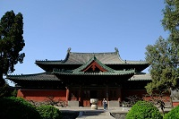

古城寺庙
正定县隶属于河北省石家庄市，位于河北省西南部，华北平原中部。临济寺作为佛教临济宗的发祥地，是研究中国佛教史和中日文化交流史的历史见证。历史上曾与北京、保定并称“北方三雄镇”，为国家历史文化名城，中国民间艺术之乡，也是百岁帝王赵佗、常胜将军赵云故里。

- 古城寺庙
- 历史名人
- 旅游景点
正定县，是一座历史悠久的旅游文化名城，春秋时期为鲜虞国，战国时期为中山国，汉高帝十一年时（公元198年）改名为真定府，意为“天下太平”，至今1400多年来，这里一直是府、州、郡、县治所，是当时北方政治经济、军事、文化的中心，曾与保定、北京并称为“北方三雄镇”。至今正定南城门上还镶有“三关雄镇”的石刻匾额。古城正定，是首都的南大门，历史上曾与保定、北京并称为“北方三雄镇”，至今南城门还嵌有“三关雄镇”的石额，正定是三国名将赵子龙的家乡，也是曹雪芹先祖曹彬的故里。 悠久的历史，灿烂的文化，给古城正定留下了众多风格迥异的文物古迹。正定古城素有“九楼四塔八大寺，二十四座金牌坊”的雅称，现存国家级重点文物保护单位7处，省级重点文物保护单位5处，其中隆兴寺尤为著名。寺中的千手观音曾被鲁迅先生誉为“中国最美的观音”。正定是我国县级唯一拥有7处国保的国家级历史文化名城。
钟
灵
毓
秀
人
才
辈
出
正定历史悠久，自北齐经历2200余年，一直是郡、府、 州、县治所，曾以真定府治所与北京(顺天府)、保定府并称“北方三雄镇”。源远流长的历史给正定留下了瑰伟灿烂的文化遗产和风格独特的名胜古迹，每年吸引众多的海内外朋友到正定旅游观光。古城正定现己命名为国家级历史文化名城。